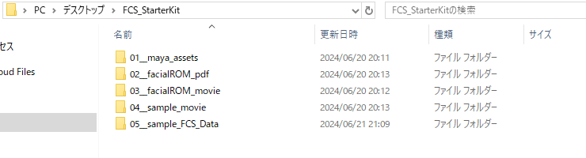
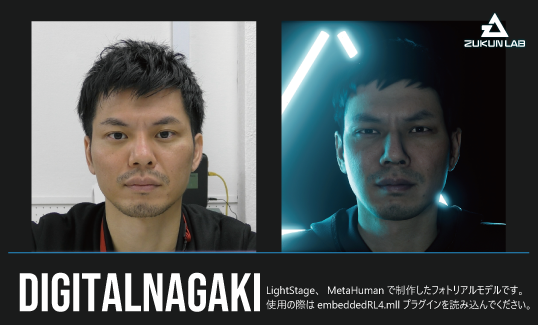

FCSスターターキット
FCS製品版のご購入、体験版のトライアル申し込みをされた方は、FCSスターターキットをご利用いただくことができます。
FCSスターターキットを使用することで、フェイシャルキャプチャー動画解析・3Dモデルへのアニメーション出力・ゲームエンジンによるレンダリング確認まで、フェイシャルキャプチャーを用いたCG映像制作工程を通してFCSをご体験いただけます。
FCSスターターキットのコンテンツ一覧
FCSスターターキットには、以下のコンテンツが含まれています。

Mayaの3Dモデルデータ
フェイシャルROM体操の表情一覧PDF
フェイシャルROM体操動画
動画解析・アニメーション出力用のサンプル動画
Profile作成済みのFCS Sessionデータ
Note
一部コンテンツのご利用には、サードパーティー製のゲームエンジン・プラグインを別途ご用意いただく必要がある場合があります。
1. Mayaの3Dモデルデータ
DIGITAL NAGAKI

DIGITAL NAGAKIとは、ツークン研究所のデジタルヒューマン技術（実在の人物をCGで再現する技術）と、Unreal Engineを開発するEpic Games社が提供するMetaHuman（デジタルヒューマン作成ツール）を組み合わせて制作された3Dモデルです。
MetaHumanに関する詳細は、Epic Games社が提供するMetaHuman紹介ホームページをご確認ください。
DIGITAL NAGAKIは、MetaHuman標準のフェイシャルコントローラを使ってアニメーションさせることができます。
MetaHumanフェイシャルコントローラの使い方は、Epic Games社が提供するこちらのYouTube解説動画をご確認ください。
Note
DIGITAL NAGAKIをご利用される際は、Unreal Engineでの確認・レンダリングが前提となります。
事前にUnreal Engineのインストール、確認用プロジェクトの作成をお願いいたします。
Unreal Engineに関する詳細は、Epic Games社が提供するUnreal Engine紹介ホームページをご確認ください。
Caution
Mayaでのレンダリングや、Unity Technologies社が開発するUnityでのご利用はできませんのでご注意ください。
現在、Unityでもご利用可能なMayaデータを準備しておりますので、今しばらくお待ちください。
2. フェイシャルROM体操の表情一覧PDF
フェイシャルキャプチャーによる動画解析では、撮影された人物が取り得る表情の強度的な限界を知ることで、動画解析の効率性を高めることができます。
眉や目、口などといった顔の各パーツの可動域（= ROM：Range Of Motion）取得を目的とした一連の表情パターンのことを、フェイシャルROM体操と呼びます。
本スターターキットでは、ツークン研究所がフェイシャルキャプチャー撮影で実際に使用している、約50パターンの表情リストをPDF化して同梱しています。
3. フェイシャルROM体操動画
フェイシャルROM体操を収録した動画です。
FCSに読み込ませてご利用ください。
4. 動画解析・アニメーション出力用のサンプル動画
動画解析で使用するサンプル動画です。
FCSに読み込ませてご利用ください。
5. Profile作成済みのFCS Sessionデータ
約50程度のProfileが実際に作成してある、FCS Sessionデータです。
FCSを使用して動画解析をする際の参考としてお使いください。